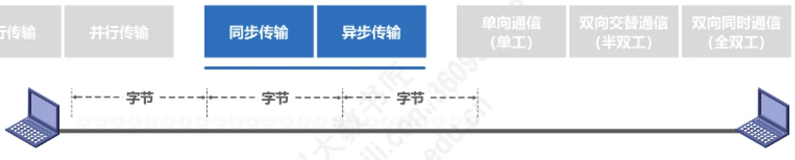
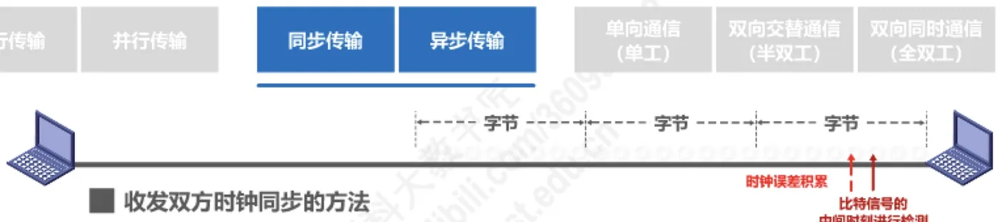
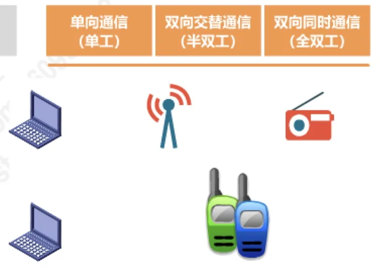

计算机通信与网络 · 第 2 章 物理层
2.3 传输方式
上一节解决了「信号走什么媒体」，这一节解决「信号在路上怎么走」。描述数据传输方式有三个彼此独立的维度：一次传几位比特（串行／并行）、收发双方怎样保持步调一致（同步／异步）、信号能不能同时朝两个方向跑（单工／半双工／全双工）。把这三个维度分清，后面讨论物理层接口和协议时才不会混。
1. 串行传输与并行传输
按照数据在信道上传送的方式，可以分成串行传输和并行传输两种。
串行传输是指数据逐位按时间顺序在一条信道上依次传送：先发第 1 个比特，再发第 2 个比特……接收端按同样的顺序逐位收下。它只需要一条信道，线路成本低、布线简单，是远距离通信采用的方式，计算机网络中的数据通常就是串行传输的。
并行传输是指一次同时传送多个比特，例如把一个字节的 8 个比特分别放在 8 条并行的信道上同时发出，接收端一次收下一个字节。它的传输速率高、不需要把并行的数据转成串行，但需要多条信道，成本高、布线复杂，而且并行信道之间会互相干扰，因此只适合近距离传输，例如计算机内部的总线、主机与打印机之间的接口。

2. 同步传输与异步传输
无论串行还是并行，接收端都必须知道每一位从什么时候开始、什么时候结束，也就是收发双方的时钟要同步。按保持同步的方式，分为同步传输和异步传输。
（1）同步传输
同步传输以字节（或更长的数据块）为单位连续发送，字节与字节之间没有间隔。由于接收端完全靠自己的时钟去采样每一位，收发双方的时钟只要有一点偏差，就会随着比特数的增加不断积累（时钟误差积累），最终可能把某一位采错。因此同步传输对时钟的要求很高，通常要在比特信号的中间时刻进行检测，这时信号最稳定，采样最不容易出错。
收发双方保持时钟同步有两种办法：
- 外同步：在收发双方之间添加一条单独的时钟信号线，专门传送时钟；
- 内同步：发送端把时钟同步信号编码到发送的数据中一起传输，例如曼彻斯特编码（下一节 2.4 编码与调制中会看到，曼彻斯特编码的每个码元中间都有一次跳变，接收端可以直接从数据中提取时钟）。
（2）异步传输
异步传输以字节为单位发送，字节之间是异步的，即字节与字节之间的时间间隔不固定，发送端想发就发、想停就停；但字节内部的每个比特仍然是同步的，各比特的持续时间相同，接收端在字节内部按约定的时钟采样即可。每个字节另用起始位和停止位来界定边界，使误差不至于不断积累。这样做的代价是每个字节都要额外传送起止标志，开销比同步传输大，所以异步传输一般用于低速、间歇性的数据传输。

3. 单工、半双工与全双工
按照信号在传输线上的方向，通信方式分为三类，这是本节最常用的一组概念。
- 单向通信（单工通信）：只能沿一个方向传送信号，一方固定发送、另一方固定接收，不能反向交互。无线电广播、电视广播就是单工通信。
- 双向交替通信（半双工通信）：双方都可以发送和接收，但不能同时进行——一方发送时另一方只能接收，说完再反过来。对讲机是典型的半双工通信。
- 双向同时通信（全双工通信）：双方可以同时发送和接收信息，相当于两个方向各有一条信道。电话通信就是全双工通信。

半双工与全双工的区别在后面的链路层和运输层还会反复出现：链路层的 CSMA/CD 是半双工方式下的媒体接入控制，而交换机的全双工端口则可以同时收发，不再需要冲突检测。
本节小结
- 串行传输逐位使用一条信道，成本低，用于远距离通信（计算机网络的数据传输）；并行传输一次传送多个比特，速率高但需要多条信道，只用于近距离；
- 同步传输以字节为单位连续发送，收发时钟必须同步，否则误差会不断积累，因此要在比特信号中间时刻检测，并通过外同步（单独时钟线）或内同步（把时钟编进数据，如曼彻斯特编码）保持同步；
- 异步传输字节之间异步（间隔不固定），但字节内的每个比特仍然同步，靠起止位界定字节边界，开销较大，适合低速间歇传输；
- 按信号方向分三种：单工（单向，如广播）、半双工（双向但不能同时，如对讲机）、全双工（双向同时，如电话）。